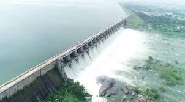

Lower Manair Dam
Lower Manair Dam is a major reservoir located on the Manair River in Karimnagar, Telangana. It serves multiple purposes including irrigation, drinking water supply, and flood control. The dam is a popular spot for tourists offering picturesque views and recreational activities.
Location: Karimnagar, Telangana, India
Activities: Boating, picnicking, photography
Transportation: Accessible by road, located near major bus routes.